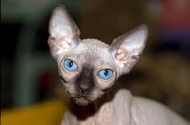

Сфинкс - кошка без шерсти



.jpg)
Канадский сфинкс — одна из нескольких бесшерстных пород кошек. При выведении породы была закреплена естественная рецессивная мутация, приводящая к отсутствию шерсти — hr. В нынешний момент это полностью сформированная и достаточно стабильная порода с 50-летним стажем, передающая свои признаки по рецессивному типу. Порода признана всеми международными фелинологическими организациями. Другие бесшёрстные кошки — донской сфинкс, петерболд, украинский левкой и др. — относительно молоды (около 20-30 лет) и находятся на пути становления. Причина утраты шерстяного покрова родоначальниками этой породы, впрочем как и всех остальных пород сфинксов, неясна. Скорее всего, это связано с единичными естественными мутациями, которые впоследствии были поддержаны и сохранены в потомстве с помощью селекции. Сейчас потомство бесшёрстных родителей тоже рождается без шерсти, хотя она также может присутствовать в разном количестве на мордочке и хвосте. Сфинксы очень ласковые и умные, но всё же их дальнейшее поведение зависит от воспитания людей. Они легко поддаются дрессировке и у них хорошая память. Сфинксы ловко прыгают, так, что даже подростки этой породы могут запрыгивать на высоту до одного метра, взрослые же особи на высоту 1,3 м. Кошки этой породы не терпят одиночества и обычно очень привязаны к хозяевам.